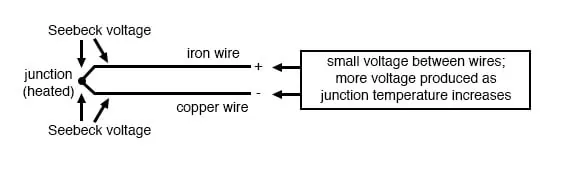
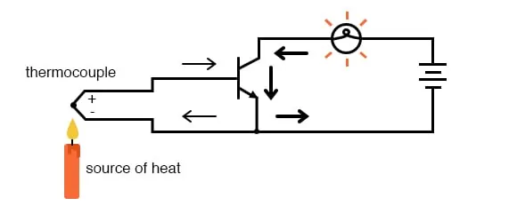
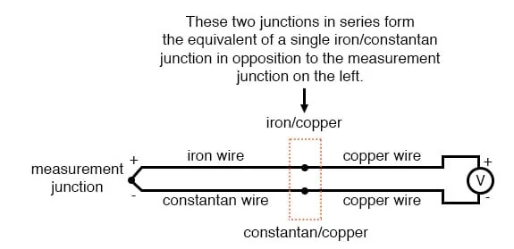
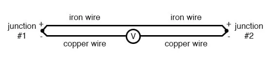
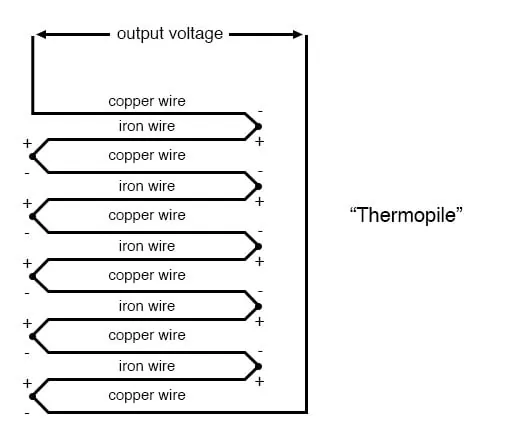
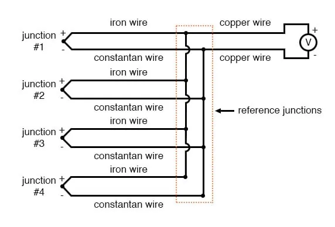
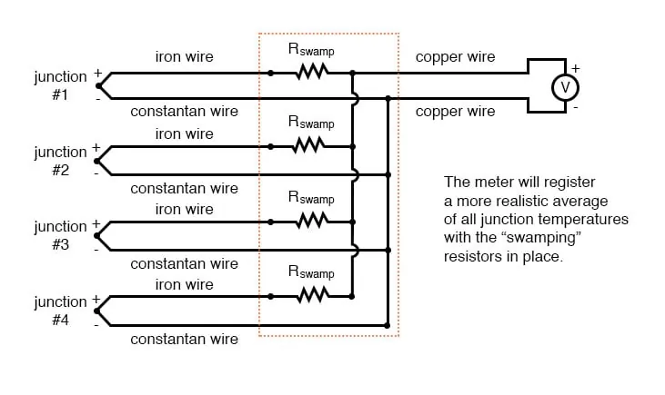

An interesting phenomenon applied in the field of instrumentation is the Seebeck effect, which is the production of a small voltage across the length of a wire due to a difference in temperature along that wire. This effect is most easily observed and applied with a junction of two dissimilar metals in contact, each metal producing a different Seebeck voltage along its length, which translates to a voltage between the two (unjoined) wire ends. Most any pair of dissimilar metals will produce a measurable voltage when their junction is heated, some combinations of metals producing more voltage per degree of temperature than others:

The Seebeck effect is fairly linear; that is, the voltage produced by a heated junction of two wires is directly proportional to the temperature. This means that the temperature of the metal wire junction can be determined by measuring the voltage produced. Thus, the Seebeck effect provides for us an electric method of temperature measurement.
When a pair of dissimilar metals are joined together for the purpose of measuring temperature, the device formed is called a thermocouple. Thermocouples made for instrumentation use metals of high purity for an accurate temperature/voltage relationship (as linear and as predictable as possible).
Seebeck voltages are quite small, in the tens of millivolts for most temperature ranges. This makes them somewhat difficult to measure accurately. Also, the fact that any junction between dissimilar metals will produce temperature-dependent voltage creates a problem when we try to connect the thermocouple to a voltmeter, completing a circuit:

The second iron/copper junction formed by the connection between the thermocouple and the meter on the top wire will produce a temperature-dependent voltage opposed in polarity to the voltage produced at the measurement junction. This means that the voltage between the voltmeter’s copper leads will be a function of the difference in temperature between the two junctions, and not the temperature at the measurement junction alone. Even for thermocouple types where copper is not one of the dissimilar metals, the combination of the two metals joining the copper leads of the measuring instrument forms a junction equivalent to the measurement junction:

This second junction is called the reference or cold junction, to distinguish it from the junction at the measuring end, and there is no way to avoid having one in a thermocouple circuit. In some applications, a differential temperature measurement between two points is required, and this inherent property of thermocouples can be exploited to make a very simple measurement system.

However, in most applications, the intent is to measure the temperature at a single point only, and in these cases, the second junction becomes a liability to function.
Compensation for the voltage generated by the reference junction is typically performed by a special circuit designed to measure temperature there and produce a corresponding voltage to counter the reference junction’s effects. At this point you may wonder, “If we have to resort to some other form of temperature measurement just to overcome an idiosyncrasy with thermocouples, then why bother using thermocouples to measure the temperature at all? Why not just use this other form of temperature measurement, whatever it may be, to do the job?” The answer is this: because the other forms of temperature measurement used for reference junction compensation are not as robust or versatile as a thermocouple junction, but do the job of measuring room temperature at the reference junction site quite well. For example, the thermocouple measurement junction may be inserted into the 1800 degree (F) flue of a foundry holding furnace, while the reference junction sits a hundred feet away in a metal cabinet at ambient temperature, having its temperature measured by a device that could never survive the heat or corrosive atmosphere of the furnace.
The voltage produced by thermocouple junctions is strictly dependent upon temperature. Any current in a thermocouple circuit is a function of circuit resistance in opposition to this voltage (I=E/R). In other words, the relationship between temperature and Seebeck voltage is fixed, while the relationship between temperature and current is variable, depending on the total resistance of the circuit. With heavy enough thermocouple conductors, currents upwards of hundreds of amps can be generated from a single pair of thermocouple junctions! (I’ve actually seen this in a laboratory experiment, using heavy bars of copper and copper/nickel alloy to form the junctions and the circuit conductors.)
For measurement purposes, the voltmeter used in a thermocouple circuit is designed to have very high resistance so as to avoid any error-inducing voltage drops along the thermocouple wire. The problem of voltage drop along the conductor length is even more severe here than with the DC voltage signals discussed earlier because here we only have a few millivolts of the voltage produced by the junction. We simply cannot afford to have even a single millivolt of the drop along the conductor lengths without incurring serious temperature measurement errors.
Ideally, then, current in a thermocouple circuit is zero. Early thermocouple indicating instruments made use of null-balance potentiometric voltage measurement circuit to measure the junction voltage. The early Leeds & Northrup “Speedomax” line of temperature indicator/recorders were a good example of this technology. More modern instruments use semiconductor amplifier circuits to allow the thermocouple’s voltage signal to drive an indication device with little or no current drawn in the circuit.
Thermocouples, however, can be built from heavy-gauge wire for low resistance and connected in such a way so as to generate very high currents for purposes other than temperature measurement. One such purpose is electric power generation. By connecting many thermocouples in series, alternating hot/cold temperatures with each junction, a device called a thermopile can be constructed to produce substantial amounts of voltage and current:

With the left and right sets of junctions at the same temperature, the voltage at each junction will be equal and the opposing polarities would cancel to a final voltage of zero. However, if the left set of junctions were heated and the right set cooled, the voltage at each left junction would be greater than each right junction, resulting in a total output voltage equal to the sum of all junction pair differentials. In a thermopile, this is exactly how things are set up. A source of heat (combustion, a strong radioactive substance, solar heat, etc.) is applied to one set of junctions, while the other set is bonded to a heat sink of some sort (air- or water-cooled). Interestingly enough, as current flows through an external load circuit connected to the thermopile, heat energy is transferred from the hot junctions to the cold junctions, demonstrating another thermo-electric phenomenon: the so-called Peltier Effect (electric current transferring heat energy).
Another application for thermocouples is in the measurement of average temperature between several locations. The easiest way to do this is to connect several thermocouples in parallel with each other. The millivolt signal produced by each thermocouple will average out at the parallel junction point. The voltage differences between the junctions drop along with the resistance of the thermocouple wires:

Unfortunately, though, the accurate averaging of these Seebeck voltage potentials relies on each thermocouple’s wire resistances being equal. If the thermocouples are located at different places and their wires join in parallel at a single location, equal wire length will be unlikely. The thermocouple having the greatest wire length from point of measurement to parallel connection point will tend to have the greatest resistance, and will, therefore, have the least effect on the average voltage produced.
To help compensate for this, additional resistance can be added to each of the parallel thermocouple circuit branches to make their respective resistances more equal. Without custom-sizing resistors for each branch (to make resistances precisely equal between all the thermocouples), it is acceptable to simply install resistors with equal values, significantly higher than the thermocouple wires’ resistances so that those wire resistances will have a much smaller impact on the total branch resistance. These resistors are called swamping resistors because their relatively high values overshadow or “swamp” the resistance of the thermocouple wires themselves:

Because thermocouple junctions produce such low voltages, it is imperative that wire connections be very clean and tight for accurate and reliable operation. Also, the location of the reference junction (the place where the dissimilar-metal thermocouple wires join to standard copper) must be kept close to the measuring instrument, to ensure that the instrument can accurately compensate for reference junction temperature. Despite these seemingly restrictive requirements, thermocouples remain one of the most robust and popular methods of industrial temperature measurement in modern use.
REVIEW: